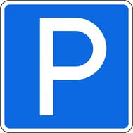
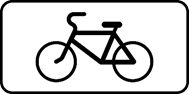
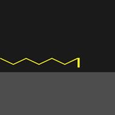
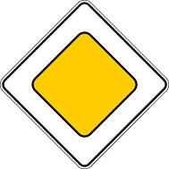
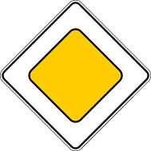

12. Остановка и стоянка
изменения от 8 апреля 2020
12.1. Остановка и стоянка транспортных средств разрешаются на правой стороне дороги на обочине, а при ее отсутствии - на проезжей части у ее края и в случаях, установленных пунктом 12.2 Правил, - на тротуаре.
На левой стороне дороги остановка и стоянка разрешаются в населенных пунктах на дорогах с одной полосой движения для каждого направления без трамвайных путей посередине и на дорогах с односторонним движением (грузовым автомобилям с разрешенной максимальной массой более 3,5 т на левой стороне дорог с односторонним движением разрешается лишь остановка для загрузки или разгрузки).
12.2. Ставить транспортное средство разрешается в один ряд параллельно краю проезжей части. Двухколесные транспортные средства без бокового прицепа допускается ставить в два ряда.
Способ постановки транспортного средства на стоянке (парковке) определяется знаком 6.4 и линиями дорожной разметки, знаком 6.4 с одной из табличек 8.6.1 - 8.6.9 и линиями дорожной разметки или без таковых.
Сочетание знака 6.4 с одной из табличек 8.6.4 - 8.6.9 , а также линиями дорожной разметки допускает постановку транспортного средства под углом к краю проезжей части в случае, если конфигурация (местное уширение) проезжей части допускает такое расположение.
Стоянка на краю тротуара, граничащего с проезжей частью, разрешается только легковым автомобилям, мотоциклам, мопедам и велосипедам в местах, обозначенных знаком 6.4 с одной из табличек 8.4.7 , 8.6.2 , 8.6.3, 8.6.6 - 8.6.9.

Знак 6.4
Таблички 8.6.1 – 8.6.9

Табличка 8.4.7
12.3. Стоянка с целью длительного отдыха, ночлега и тому подобное вне населенного пункта разрешается только на предусмотренных для этого площадках или за пределами дороги.
12.4. Остановка запрещается:
· на трамвайных путях, а также в непосредственной близости от них, если это создаст помехи движению трамваев;
· на железнодорожных переездах, в тоннелях, а также на эстакадах, мостах, путепроводах (если для движения в данном направлении имеется менее трех полос) и под ними;
· в местах, где расстояние между сплошной линией разметки (кроме обозначающей край проезжей части), разделительной полосой или противоположным краем проезжей части и остановившимся транспортным средством менее 3 м;
· на пешеходных переходах и ближе 5 м перед ними;
· на проезжей части вблизи опасных поворотов и выпуклых переломов продольного профиля дороги при видимости дороги менее 100 м хотя бы в одном направлении;
· на пересечении проезжих частей и ближе 5 м от края пересекаемой проезжей части, за исключением стороны напротив бокового проезда трехсторонних пересечений (перекрестков), имеющих сплошную линию разметки или разделительную полосу;
· ближе 15 метров от мест остановки маршрутных транспортных средств или стоянки легковых такси, обозначенных разметкой 1.17 , а при ее отсутствии - от указателя места остановки маршрутных транспортных средств или стоянки легковых такси (кроме остановки для посадки и высадки пассажиров, если это не создаст помех движению маршрутных транспортных средств или транспортных средств, используемых в качестве легкового такси);
· в местах, где транспортное средство закроет от других водителей сигналы светофора, дорожные знаки, или сделает невозможным движение (въезд или выезд) других транспортных средств (в том числе на велосипедных или велопешеходных дорожках, а также ближе 5 м от пересечения велосипедной или велопешеходной дорожки с проезжей частью), или создаст помехи для движения пешеходов (в том числе в местах сопряжения проезжей части и тротуара в одном уровне, предназначенных для движения маломобильных граждан);
· на полосе для велосипедистов.

Разметка 1.17
12.5. Стоянка запрещается:
· в местах, где запрещена остановка;
· вне населенных пунктов на проезжей части дорог, обозначенных знаком 2.1 ;
· ближе 50 м от железнодорожных переездов.
 

Знак 2.1
12.6. При вынужденной остановке в местах, где остановка запрещена, водитель должен принять все возможные меры для отвода транспортного средства из этих мест.
12.7. Запрещается открывать двери транспортного средства, если это создаст помехи другим участникам дорожного движения.
12.8. Водитель может покидать свое место или оставлять транспортное средство, если им приняты необходимые меры, исключающие самопроизвольное движение транспортного средства или использование его в отсутствие водителя.
Запрещается оставлять в транспортном средстве на время его стоянки ребенка в возрасте младше 7 лет в отсутствие совершеннолетнего лица.